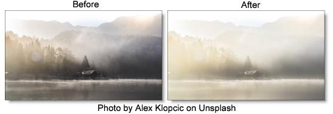

Fog
Description
The Fog filter creates a soft, misty atmosphere over the image and glows highlights.
Category
Diffusion/Blurs.
Controls
Presets
To select a preset, pick one from the Presets window.
Fog
Blend
Determines the blend mode to be used to create the fog effect.
Add
The fog is added to your image.
Screen
The fog is combined with the image using a Screen blend mode. This looks kind of like the Add blend mode, but highlights are retained.
Brightness
Sets the intensity of the fog.
Blur
Sets the softness of the fog.
Color
The Color parameter sets the color of the fog through the use of a standard color picker. The default color is white.
Matte
A matte is used to create the fog effect. Go to the
Matte section of Common Filter Controls to see how the Matte controls work.